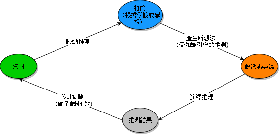

1 緒論~科學方法
“According to the hypothetico-deductive method, to which psychology at least nominally adheres, a scientist begins by formulating a hypothesis that addresses some aspect of a relevant theory. With the hypothesis decided, the scientist then conducts an experiment and allows the data to determine whether or not the hypothesis was supported. This outcome then feeds into revision (and possible rejection) of the theory, stimulating an iterative cycle of hypothesis generation, hypothesis testing, and theoretical advance.” — Chris Chambers (2017)
“Science has cured diseases, mapped the brain, forecasted the climate, and split the atom; it’s the best method we have of figuring out how the universe works and of bending it to our will. It is, in other words, our best way of moving towards the truth.” — Stuart Ritchie (2022)
本章開頭引述的段落來自兩本談論心理學再現危機(replication crsis)的科普書：七大罪 (Chambers, 2017)以及科學的假象 (Ritchie, 2020)，兩本書的作者都是參與心理科學再現危機重要事件的第一線心理科學研究者。這兩段話在書中的脈絡都是與讀者討論彼此認知的科學方法(scientific method)1，究竟出了什麼問題？這兩本書在開放科學提倡者之間有極大迴響，但是在更大眾的出版市場，影響力相當有限。本書主筆之一認為無法發揮更大影響力的主因，是這兩本書定位目標讀者，必須是有科學研究經驗的專業科學家或公民科學參與者。這群讀者對於科學方法的了解是透過親身參與，而非只是透過閱讀專業書藉或參考資料，記憶他人給你的解釋而已。透過介紹這兩本書，使用本書學習心理學實驗研究方法的同學應該能明白這本教科書的主要功能 – 引導你從完整參與可重製實驗研究的過程，啟發獨立判斷心理學研究品質的眼光。如果你認真完成至少一項本書提供的研究專案範本(或者與你的指導教授合作的研究專案)，產生閱讀七大罪與科幻小說的興趣，就達到我們編寫這本教科書的中長程目標之一了。
科學心理學顧名思義也是運用科學方法探究心理學知識，那麼學習起點當然是要認識什麼是科學方法。讀過前一段後，你應該知道親身體會比記憶各種來源名詞的解釋更重要，所以本書第一章先透過介紹普及開放科學的實踐方式，以及比較實驗研究與其他研究方法的證據等級(Level of evidence)，向你說明為何學習實驗研究法，是心理學研究者掌握科學方法的最佳途徑。接著我們會討論現實的心理科學研究場景，是如何更新知識；基於開放及可重製原則的研究操作，是如何生產強度最高的實驗證據、或是檢核已出版研究的證據品質。最後，透過介紹本書的學習架構，我們提供一些進一步思考的課題，讓同學從實踐開放與可重製研究專案的過程中，形成科學方法的概念。
也許有些同學在繼續讀下去的時候(或者聽教授繼續解釋)，會被一些既定印象困惑。其中一些應該像是「科學方法不就是操作科學儀器嗎？」、「心理學的科學方法不就是編量表、寫實驗程式碼嗎？」。其實這些印象只是科學研究過程的一部分，也許是來自你的親身經歷或者聽聞某些學長姐描述的經驗，完整的科學方法涵蓋從提出問題到收集分析資料，做出結論的科學研究過程。操作儀器的活動比較容易影像化，比較容易觸及你我的眼球，影像記憶較深刻的學生也許要花些功夫克服這些印象，才能繼續學習。如果你有這樣的困惑，又很難靠個人意志擺脫，不妨與你所在學校的專業教授當面聊一聊。
另外還有一些困惑初學者的問題可能是「科學問題不都是從觀察週遭環境出來的嗎？」、「心理學的問題不都是來自對人類的觀察嗎？」。其實心理學做為一個相對年輕的科學領域，重要課題都是從其他發展歷史更久的科學領域提煉出來，才逐漸形成新的知識體系。心理學者形成研究問題的主要來源是透過閱讀文獻，與其他科學研究人員討論，還有在參與實際研究的過程中發覺形成。所以很多心理系學生會覺得閱讀文獻的訓練，比與人互動的訓練更多；或者閱讀量要先達到一定程度，甚至要透過考核，才能進行與人互動的訓練。也許有些心理學者確實能在現實觀察中得到研究靈感，不過我們認為觀察經驗是形成研究問題的助力，而非研究問題的主要來源。與實驗研究法更有關的現實狀況是，許多有突破性的科學心理學研究，其實是改進之前的研究成果。本書後半部介紹的示範研究專案，都有可追溯的文獻歷史。我們希望透過本書提供的學習架構，讓有此疑惑的同學們，了解為何收集整理以及閱讀心理學論文，也是學習科學方法的重要部分。
1.1 為何需要知道科學方法
也許更多同學還需要更實際的理由，才能接受要了解科學方法的必要性。在此以近年受網路社群文化影響，30歲以下族群在社交場合會用來與新朋友開啟話題的「邁爾斯-布理格斯性格分類指標」（Myers-Briggs Type Indicator，簡稱MBTI），談談了解或不了解科學方法會如何影響你的世界觀。或者讀者可以想想自己現在習慣看待世界的方式：你會不會習慣以容易分類的方式看待自已及互動的他人？你能不能接受你所接受的主張或觀念可被否定？
MBTI的開發者邁爾斯母女，是基於對心理學的興趣，自學精神分析學者卡爾·榮格(Carl Gustav Jung)的心理類型理論，而提出的 16 型人格理論以及測驗方法。榮格認為人類的人格源自先天的秩序，要了解一個人的行為，必須先了解其所屬的性格類型。邁爾斯母女的理論主張每個人都有一種「真實」的人格類型，會導致所觀察到個體的行為差異。也就是你能簡單解釋擅長與人溝通的人是「E人」，不大愛講話的朋友是「I人」的基本主張(Stein & Swan, 2019)。
如果你認為這樣的人格分類是科學的，那麼就需要了解為何在網路社群帶起討論熱潮前，只有美國企業的人力資源部門會使用MBTI測驗，社會及人格心理家都不會探討這個理論及測驗(Stein & Swan, 2019, p. 1)。主要原因有兩方面：首先是測驗題目的施測結果缺乏信度(reliability)與效度(validity)，任何人重複施測會得到不一致的結果。好比你今天心情比較好的話，會測出屬於E類型，隔天心情變差再做測驗就變成I類型。
另一個原因是開發者邁爾斯母女主張任何人都有「真實」的性格，不會受到所生活的文化環境及成長經驗所影響，如此開發出的MBTI測驗必然是反映個人的「真實」性格，不可能測出「虛假」人格。如此的主張已經不具備使用科學方法的基本條件～任何可用科學方法檢驗的理論或假設，必須可被檢驗為否。這是學習任何科學究方法的學生首先會遇到的關卡，卻是真正的科學能累積知識成果的基礎。
人類對世界如何運作的理解其實是根據自已提出的猜測及主張，科學理論也是一種主張，只是更講究要站在有證據的立場。但是如果能提出支持主張的證據，任何主張似乎都有足夠的說服力。上個世紀奧地利哲學家卡爾．波柏(Karl Popper)就提出「否證」才是科學理論不同於其他人主張關鍵區別：他認為「科學理論無法加以驗證，而只能加以否證」，科學理論「必須有遭遇否證的可能」而且「可否證程度越高越好」。詳細說明可參考林正弘 (2020)。〈卡爾．波柏〉，王一奇（編），《華文哲學百科》（2020 版本）。
1.2 科學心理學知識的更新循環
現代科學的生產知識流程源自十七世紀英國哲學家弗蘭西斯·培根提出的排除歸納法2，這是人類思想史上第一套科學方法論。此後隨著科學的總體發展，科學方法論述不斷改進，但是任何一派方法學論都有肯定歸納推理(Inductive Reasoning)和演繹推理(Deductive Reasoning)兩種思考過程的價值。
只要你能提出的主張符合演繹推理的規則，無論有沒有事實支持你的主張，都能推論出有效的結論。
古希臘哲學家亞里斯多德提出的三段論證是最典型的演繹推理規則，只要你的主張是由A與B兩項要件構成，以下兩種三段論證都能得到有效結論：
如果A為真，則B為真。 A是真的。 所以B是真的。
如果A為假，則B為假。 B是假的。 所以A是假的。
隨著統計學及計算機科學的興起與成熟，隨機方法及機率建模等統計方法成為當代科學實驗重要工具，科學方法形成更新知識的循環流程，大致有七個步驟：
創建假說3：透過演繹推理，根據現有知識和理論提出假說。
做出預測：基於假說演繹事件發生過程，推測可能的實驗結果。
設計實驗：使用研究者認知的統計原理，設計有效的實驗以產生相關數據。
收集資料：按照設計進行實驗、收集資料。
檢驗假設：使用統計方法分析資料，歸納分析結果，檢驗假說預測的正確性。
修改假說：如果分析結果與預測不符，提出改良假說的主張。
重複循環：持續進行上述步驟，歸納新的知識以及建立新的假說。
這個循環反映科學方法的本質-假說永遠都可能被新的實驗資料推翻。科學研究的可及目標不是找出「絕對真理」，而是建立與事實一致的有效工作假說，作為暫時的知識基礎。統計方法在「設計實驗」和「檢驗假說」這兩個步驟發揮關鍵作用，科學家能夠有效利用資料進行創造性思考，不斷完善假說，以求能更準確地描述自然現象。

本章開頭引述的兩本書提到的科學方法，正是符合多數科學家共識的知識生產循環流程，?fig-scimethod的循環流程圖，是改編自 Rao (1997) 的圖解 。圖中的橢圓代表能用文字或可視覺化的圖表呈現的階段性產物，箭頭及內嵌的文字說明方塊展示每個階段的思考過程。所有科學研究方法的課程，都是帶領學習者調整、改造自已的思考過程，按照符合科學原則的流程檢視自己己經知道與尚未知道的事物。
1.3 為何需要學習開放科學操作
如果學生可以認同真正的科學研究應該按照如同 圖 2.1 的循環流程，就能持續產生有益人類文明發展的知識，也許不需要與真人教師互動上課。但是現實的科學研究人員，並不是人人都按著前述的流程進行研究工作。不是從事科學研究工作的一般民眾，若只以發言者有科學家身份就相信其主張，其實是不夠謹慎的。以下談一談現實的科學研究狀況。
本章一開始曾提到一個有些聳動的名詞：再現危機(Replication crisis)，這是泛指心理科學領域從2011年起，透過檢討違反學術倫理的個案，以及多項跨實驗室合作再現專案，可成功再現原始研究結果不及一半，眾多心理學者意識到的各種問題(參考 Pennington, 2023 的名詞解釋)。最常被討論的問題有發表偏誤(Publication Bias)，不正當的研究操作(Questionable Research Practices, QRPs)，以及缺乏透明度(lack of transparency)4。最後一種問題的根源是許多心理科學及多數社會科學領域的研究者缺乏開放研究內容的觀念，在民主社會公民意識為主的現代，民眾應當了解大部分科學研究是受到政府單位的經費補助才能進行，而政府單位提供的經費是來自每一個合法公民的納稅，因此你我都有權知曉受政府補助的研究案內容。科學家也有義務向大眾揭露研究細節。
這一章一開始引用的「七宗罪」及「科學的假象」都對再現危機做了完整的介紹：「七宗罪」指出其中一個主要問題是許多研究結果缺乏可靠性。「科學的假象」作者認為，這是因為心理學社群過度重視新穎、正面的結果，卻忽略再現的重要性，導致許多研究結果無法被其他心理學家重複驗證。 兩本書對於為何多數心理學研究結果不可靠，整理出以下原因：
- 低統計檢定力：許多心理學研究的樣本數太小，導致統計檢定力不足，使得原始研究論文呈報微小但有統計顯著的效應，其他研究者卻難以重新偵測。
- 操縱p 值：為了讓研究結果看起來符合統計的顯著指標，有些心理學研究人員會使用各種手法縮小統計分析的 p 值。
- 缺乏透明度：許多心理學研究人員沒有完整公開他們的研究資料和程序程式碼，使得其他研究人員難以重複驗證原始研究結果。
- 重視概念再現(conceptual replication)甚於直接再現(direct replication)：為了追求新穎的研究結果，心理學研究社群長期倡導概念再現比直接再現更有價值，研究設計的嚴謹性在持續出現的概念再現研究不斷被削弱。
總而言之，再現危機突顯的問題，顯示科學研究不只是直線式地檢驗假設、收集及分析資料、然後歸納出結論。每一步思考過程都很容易被人類偏見扭曲，產生不只一種行動選擇。因此，實際的科學研究進程，其實更像是進入一座花園迷宮，前方道路有分歧的歧路花園5。
改編自 Pennington (2023), 圖3.8 An example of the garden of forking paths. Starting with a research question, a Teacher can make many different methodological and analytical decisions that impact the research findings Making such decisions based on the results can lead to false positives

1.4 有指引的開放科學操作
以初識實驗研究的教材來說，再現危機所曝曬的問題都直指最基本的研究觀念養成，因此本書的設計主軸之一是介紹初學實驗研究的學生，能學會並實用的開放科學操作。這些操作每年都有更新的指引或新的工具出現，不過核心原則都是一致的。本書將介紹的開放科學操作包括預先註冊與註冊報告、可重製的樣本數估計及資料分析方法、以及開放資料操作指引。這些操作將結合後續各章主題，進行深入介紹，還有提供同學演練例題。
1.4.1 預先註冊
簡單的操作說明是研究者必須按照嚴格按照研究計畫的設定，按步執行及紀錄收集及分析資料的步驟。本書作者認為，一份能讓研究者按步執行的預先計畫書，至少要有四項條件：(1)有明確的研究問題(Research Question)；(2)掌握樣本母群與合理樣本數(Population and sample size)；(3)能回應研究問題的研究設計(General design)；(4)依照設定的變項(variables)或已編碼的資料集(dataset)處理資料。 在編寫本書時，已經出現因應各式研究需要或平台條件，而設計的預先註冊模板，如 表 1.1 的整理。
| 模板名稱 | 適用目的 | 參考文獻 |
|---|---|---|
| AsPredicted.org | 量化/實驗研究 | Simmons et al. (2018); Simmons et al. (2021) |
| OSF Prereg | 量化/實驗研究 | (bowmanOSFPreregTemplate2020?) |
| PRP-Quant,shiny app | 量化/實驗研究 | Bosnjak et al. (2022) |
| Secondary data preregistration | 既存資料再分析/量化 | van den Akker et al. (2021) |
| fMRI preregistration | 功能核磁共振成像實驗設計 | (beyerFMRIPreregistrationTemplate2021?) |
| Replication Recipe | 再現研究設計 | Brandt et al. (2014) |
| Preregistration in social psychology | 量化/實驗社會心理學 | van’t Veer & Giner-Sorolla (2017, April 7) |
| Cognitive modelling | 認知模型建構及測試 | Crüwell & Evans (2021) |
| Qualitative preregistration | 質性研究 | Haven & Grootel (2019); Haven et al. (2020) |
| Systematic reviews | 人類和動物研究的系統性文獻回顧 | Page et al. (2018); Stewart et al. (2012) |
1.4.2 註冊報告
預先註冊計畫經由未參與計畫的同儕評審核可，研究人員再依計畫執行，就是運作註冊報告的基本規則。因為需要邀請公正且無利益衝突的專家擔任評審，目前註冊報告的運作，主要依靠學術期刊等論文發表平台。通過同儕評審的預先註冊報告，會取得期刊的原則性接受(in-principle acceptance, IPA)。如果研究者希望突顯主要參與人員的責任，並保障研究過程能完整公開，將取得原則性接受的研究計畫發佈在預印本平台，是能提昇學術倫理高度的作為。
至於採用預先註冊或註冊報告的研究會不會有較佳的研究品質，2021年有研究團隊(Soderberg et al., 2021)從多種心理學與神經科學期刊挑選29篇註冊報告論文與57篇傳統模式發表論文，隨機配成兩篇一組再邀請7000多位相關領域學者進行出版後評審，成功回收的300多筆評審顯示，註冊報告論文的研究方法及計分析研究度，以及整體品質指標評分，都顯著高於傳統發表論文。儘管創新程度並無明顯差異，這項初步調查顯示註冊報告正在朝向提倡者想要改善當前科學研究只重視研究結果新奇性，卻忽略研究過程嚴謹程度而有害科學規範的現況(Chambers et al., 2013)。
1.4.3 可重製的樣本數估計及資料分析方法
經由本書主要學習的統計方法涵蓋與實驗設計有關的樣本數估計，以及驗證歸納推理的資料分析方法。這些統計方法在基礎統計課程都有教授，但是多數大學提供學生的只有統計理論及實作方法的初步入門，在真正的研究場景要如何正確使用統計，歸納有助了解人類心智運作的科學知識，正是這門課程要學習的目標。本書將運用已發表的重製專案為材料，從案例探討中學習如何選擇及使用正確的統計方法。
1.4.4 開放資料操作指引
所謂開放資料不只是將研究資料公開到任何人都能自由檢索的公開網站而己，還有如何解釋及使用資料的元資料(meta data)。本書將參照FAIR公開資料協議6，說明如何挑選可尋得(Findable)且可取用(Accessible)的公開資料儲存庫，以及要公開的資料如何能與其他來源資料相互整合(Interoperabble)，還有重覆使用(Reusable)。本書讀者可透過評估已發表的研究公開資料符合各項原則的條件，以及實作範例認識如何運用FAIR的指引。
1.5 研究倫理基本須知
科學研究能增進人類對這個世界的了解，是每個領域科學家進行研究的主要動機。行為與社會科學的研究對象是人類，運用各種方式取得人類行為資料是研究之必需。儘管研究有崇高的目標，任何取得資料的方式都不能侵害個人利益，或造成任何可能的風險。以下引述 Saul (2011) 整理的基本須知，補充最近應該考慮的例子：
獲取資料的方式是否會引發參與者心理或生理的不適？ 例如：詢問個人性別不只設計兩個選項，讓跨性別人士自由決定要不要告知。
收集資料有無侵犯個人隱私？ 例如：在公開場合進行實驗；收集個人上網載具定位…
因實驗操作的需要，事前隱暪部分內容，會不會損害參與者權益？ 例如：分班實施不同的教學法，比較學生的學習表現。
參與者隨時中止參與研究的自由。
邀請未成年人士參與研究，應考慮的問題：
以非人類動物進行研究，應考慮的問題：
```
英文維基百科條目~ https://en.wikipedia.org/wiki/Scientific_method↩︎
https://zh.wikipedia.org/zh-tw/%E5%9F%B9%E6%A0%B9%E6%B3%95↩︎
參考FORRT詞彙表Reproducibility crisis (aka Replicability or replication crisis) ~ https://forrt.org/glossary/reproducibility-crisis-aka-replicab/↩︎
參考FORRT詞彙表Garden of forking paths ~ https://forrt.org/glossary/garden-of-forking-paths/↩︎
FAIR四大項目原則說明 ~ https://www.go-fair.org/fair-principles/↩︎